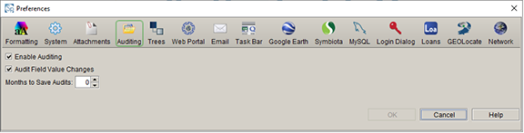

AuditingAuditing
AuditingAuditingThe auditing table in Specify be configured to tracks field-level changes in the database and queried to produce a log of database transactions. Users with Admin priviledges can enable/disable auditing and configure the length of time the logged changes are saved in the database using the Preferences dialog:

Auditing Preferences
The Auditing table is accessible to users with Admin privileges. It is not accessible in the Specify application by default and must first be enabled and configured in the User Preferences dialog:
NOTE: A value of '0' is equal to infinity in the database and will save logged changes indefinitely, or until they are deleted within the system.